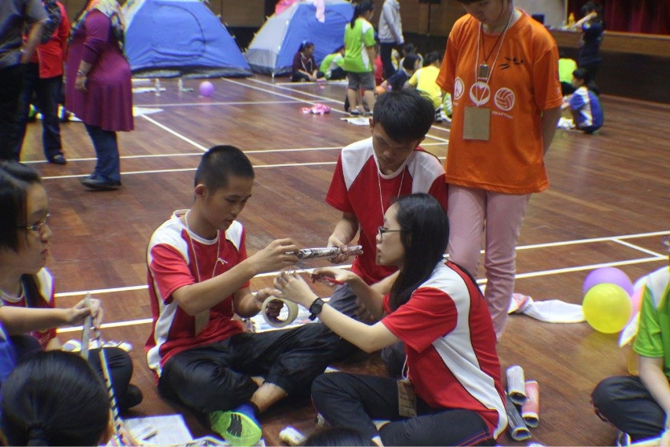
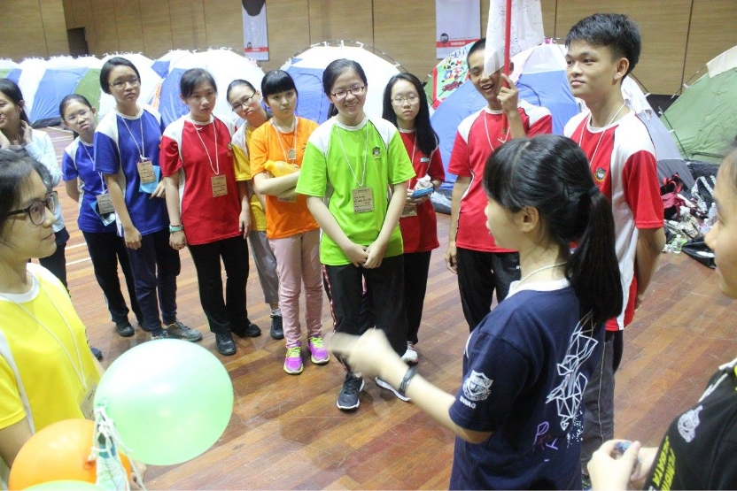
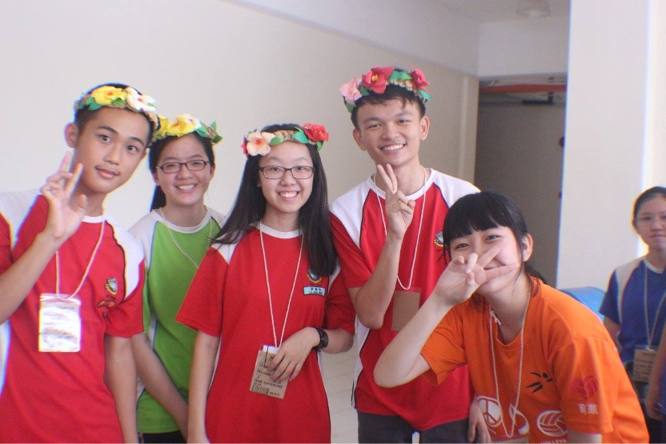
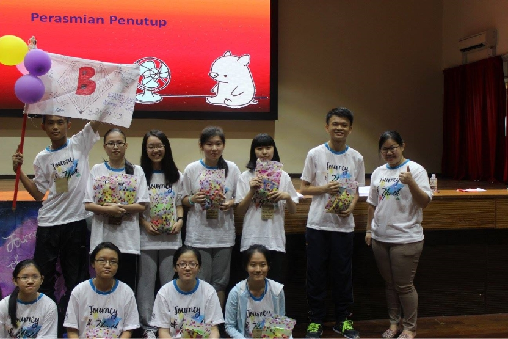

PRS holds a camp every year, so that all members can study abroad, and also enhance the relationship between members. One of the camps that impressed me the most was the time I went to Inti University. I was form 4 at the time, this was the year that I most active in extracurricular activities. So during the camp, I self-recommended to become the team leader. That was the first time I became a team leader at the camp, so at that time I thought about leading all the team members and doing my best in every event.


{kind=link}
{kind=link}
In every activity, I led everyone to complete each task with all my heart and soul. I also take the initiative to give suggestions in order to make them give ideas too. At a certain event at that time, we needed to use only newspapers to make a tent that could accommodate all the team members. Although it was a bit difficult at first, I still urged everyone to give their opinions together. As a result, everyone worked together and successfully made the structure of the tent. In the end, we really succeeded in creating a tent that can accommodate all of us. We were so very happy and fulfilled. In addition to some educational activities, we also have some game session, which are also the most exciting and exciting part for me. We had successfully won the other teams with good communication and cooperation. We all are very happy and excited until started to put the flower props prepared by the seniors on our heads to make some faces and pose when the teacher try to catch some photos of us.


{kind=link}
{kind=link}
Not only that, the camp also provided a talent night session for us to bring some wonderful performance to all of us including teacher. We thought hardly on what performance that we wanted to present because there was no theme for the performance. In the end, we decided to perform a comedy show. I divided all the preparation task to everyone, some of us wrote the script, some of us prepare the props while some of us thought the actions of the show. As a result, we successfully made all the audience laughed. I’m very enjoyed as I infected everyone with my laughter to laugh together in show. In addition, we were also selected as the best group due to the active performance of our group. After three days and two nights of the camp, I had a very good relationship with my team members. I think that this camp is very meaningful because this is my first attempt to be a team leader, and I also took this opportunity to let me know more about some of my juniors and friends in the group that I didn't know very much.